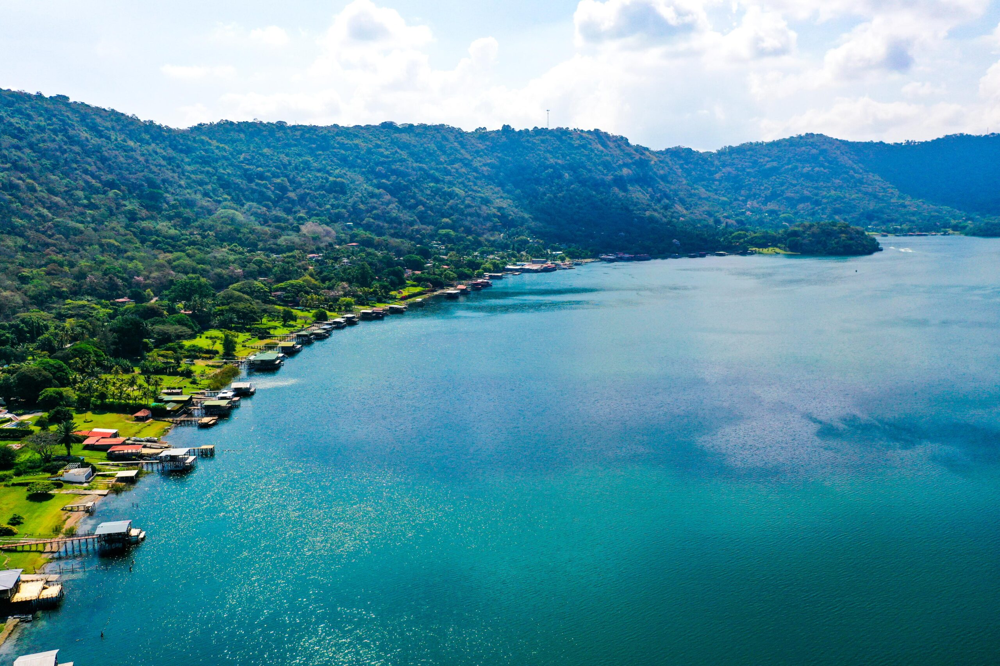
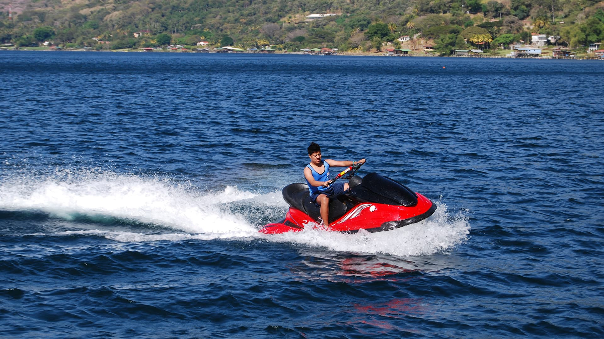
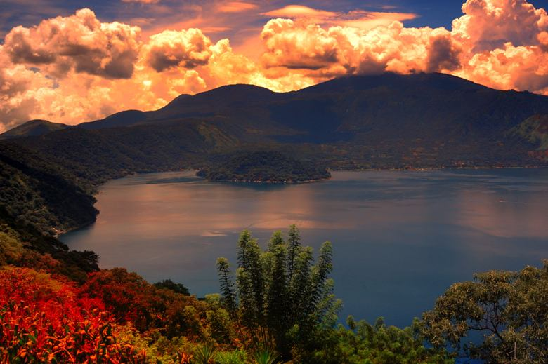

Historia
El Lago de Coatepeque es un lago de cráter volcánico situado en el occidente de El Salvador.
Su nombre proviene del náhuatl y significa "cerro del serpiente". Es famoso por su belleza escénica,
rodeado de montañas y volcanes, y por ser un destino turístico ideal para actividades acuáticas y recreación.
Ubicación
Se encuentra en el departamento de Santa Ana, aproximadamente a 60 km al oeste de San Salvador.
Está ubicado entre los municipios de Coatepeque, Santa Ana y el Cerro Verde.
Es fácilmente accesible por carretera desde la capital y otras ciudades cercanas.
¿Por qué es famoso?
- Escenario natural impresionante: Sus aguas verdes y la vista del cráter volcánico lo hacen único. (El Salvador Travel)
- Actividades acuáticas: Se puede nadar, hacer kayak, paddleboard y paseos en lancha. (Visit Centroamérica)
- Restaurantes frente al lago: Numerosos restaurantes ofrecen comida local y vistas panorámicas. (Tripadvisor)
- Alojamiento turístico: Hoteles y cabañas frente al lago permiten hospedaje con vista al cráter. (CATA)
Qué hacer en Lago de Coatepeque
- Deportes acuáticos: Kayak, paddleboard, paseos en lancha y pesca recreativa.
- Gastronomía: Disfrutar de mariscos frescos y platos típicos de la zona.
- Senderismo: Recorrer los alrededores del cráter y disfrutar de la flora y fauna.
- Fotografía: Capturar los atardeceres y paisajes panorámicos del lago y sus volcanes.
Cómo llegar
En vehículo privado:
- Toma la Carretera Panamericana (CA-1) hacia occidente.
- Continúa hasta llegar a Santa Ana.
- Desde Santa Ana, sigue las señales hacia Coatepeque y luego hacia el lago.
En transporte público:
- Desde la Terminal de Occidente en San Salvador, toma un autobús hacia Santa Ana.
- Desde Santa Ana, hay autobuses locales que van hacia Coatepeque y paradas cercanas al lago.
Galería



⬅ Volver a Lugares